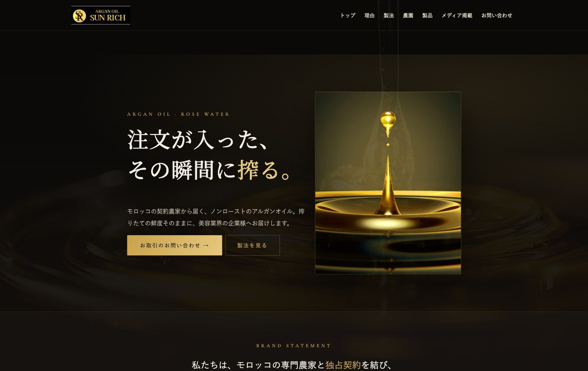

モロッコ産アルガンオイルのBtoB輸入販売
「Sun Rich」様 コーポレートサイトをリニューアル公開

くうが株式会社（本社：愛知県名古屋市、代表取締役：久我 瞳）は、Webサイト制作サービス「うさみみWebデザイン」において、モロッコ産アルガンオイル・ローズウォーターのBtoB輸入販売を手がけるSun Rich様のコーポレートサイトを全面リニューアルし、2026年8月25日に公開しました。
公開サイト：sunrichforyou.com
Sun Rich様について
Sun Rich様は、モロッコの契約農家と独占契約を結び、非焙煎（ノンロースト）のアルガンオイルとローズウォーターを、化粧品・美容業界の企業様へBtoBで卸販売しています。最大の特徴は、注文が入ってから搾油し、搾りたての鮮度のまま空輸で届けること。同社によれば、この精度でアルガンオイルを扱っている事業者は日本・アジアでもほとんどなく、原料の品質にこだわる化粧品メーカーやサロンから支持を集めています。
制作のポイント
キャッチコピー「注文が入った、その瞬間に搾る。」を軸に、黒と金のビジュアルで搾りたての鮮度とプレミアム感を表現しました。独占契約の農園、非焙煎の製法、注文後搾油、空輸という強みを、はじめて訪れた企業担当者にも順を追って伝わる構成にしています。
サイトはWordPressで構築し、常時SSL化、旧サイトURLからの転送設定、お取引相談につながる問い合わせフォームの刷新までを一括で対応。PC・スマートフォンのどちらでも読みやすいレイアウトです。
うさみみWebデザインについて
「うさみみWebデザイン」は、くうが株式会社のホームページ・LP制作サービスです。ヒアリングから設計、WordPress構築、公開後の運用まで、名古屋を拠点に全国のお客様へ小回りの利くチームが伴走します。サイトのリニューアルや新規制作のご相談は、お問い合わせフォームからお気軽にどうぞ。
くうが株式会社について
くうが株式会社（KUGA Inc.）は、愛知県名古屋市を拠点に、Webサービスの企画・開発・運営とWebサイト制作を行う会社です。行政書士事務所向け多言語LP生成サービス「ネットでLINK」、全国のダンス教室検索サイト「全国ダンスマップ」、Webサイト制作サービス「うさみみWebデザイン」を展開しています。小さなチームだからできる速さと丁寧さで、「あったらいいな」を形にしています。
会社名：くうが株式会社（KUGA Inc.）／代表取締役：久我 瞳／所在地：愛知県名古屋市中村区名駅4丁目24番5号 第2森ビル401／Web：kugainc.com